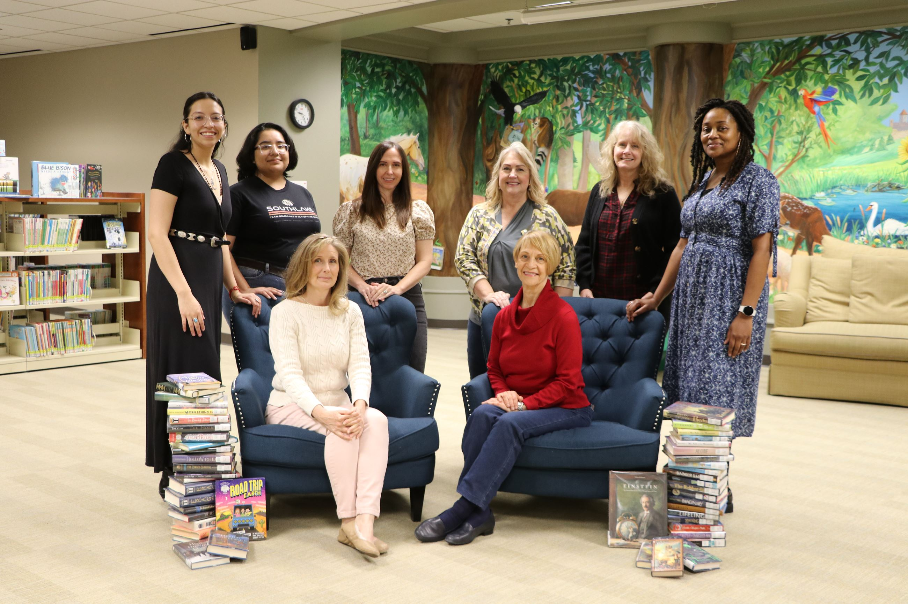
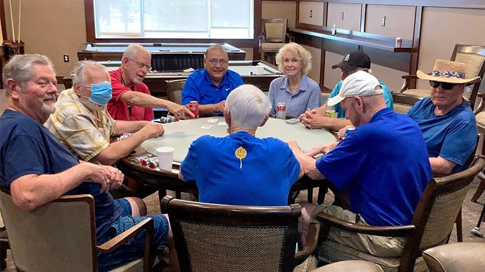

I have enjoyed giving back to my community in a number of ways. In my hometown of Southlake, TX, I volunteered at the public library organizing and shelving books.
Over the summer, I was a summer reading ambassador where I ran a program to encourage elementary school kids to read more by having them turn in reading logs for prizes.

Also in Southlake, I worked at the senior center cleaning, setting up for events, and cooking.
Both of these experiences were great high school activities, but in college I have done even more.

At Texas A&M, I have participated in Big Event every year, where I join a group assigned to a resident of Bryan/College Station's house and assist them with anything they like,
usually consisting of yard work or small construction projects.

Additionally at Texas A&M, I am a Teaching assisstant and Peer Teacher
Overall, I have enjoyed giving back to my community, wherever it may be. I always look for opportunities to show my appreciation for the people who make a place home